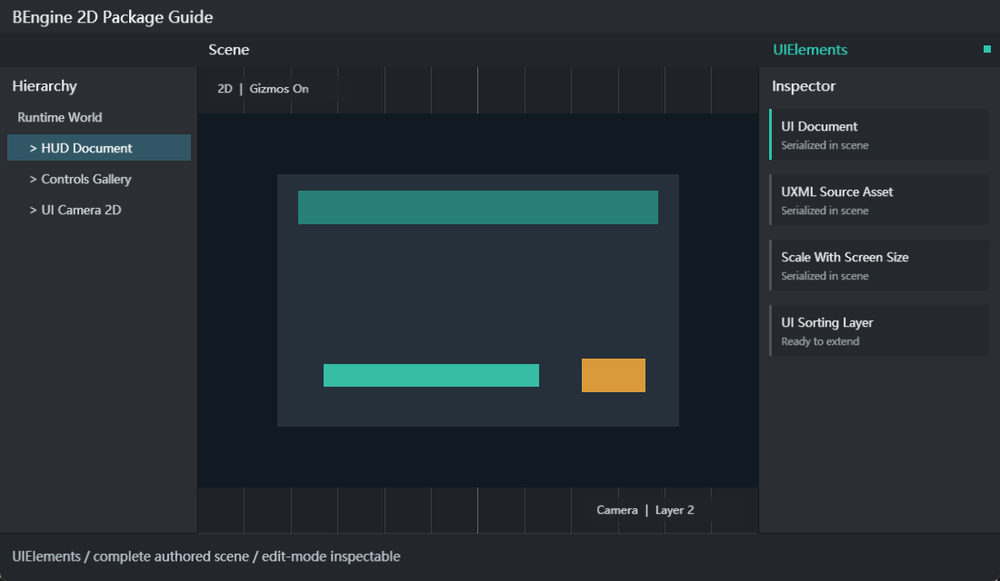

文本与输入
Label、TextField、IntegerField、FloatField、 SearchField、Toggle、Slider、DropdownField、ColorField。
UIElements 是可选的保留模式 UI 包。它通过 UIDocument 把 VisualElement 树提交到 具有稳定内建身份的 UI Sorting Layer，支持 UXML 结构、USS 样式、UI Builder、HTML 转换、运行时查询与控件事件。

Assets/Examples/RuntimeHud/res/UIElements.scene.yaml。| 示例 | 场景和资源 | 交互 |
|---|---|---|
| Runtime HUD | UIDocument、RuntimeHudController、世界背景、Camera2D、UXML、USS | Button 更新 ProgressBar、重建 TreeView、改变 Status；验证分辨率缩放。 |
| Controls Gallery | UIDocument、ControlsGalleryBootstrap、Camera2D、完整控件 UXML/USS | Text/Search/Toggle/Slider/Dropdown 输入，Preset/Reset，同步 Progress 与状态。 |
两个示例的 UIDocument 和 Camera 都直接序列化在场景中，sourceAsset 使用导入后的真实工程路径； 它们不是进入 Play 后才为一个空对象补齐全部 UI。
| 字段 | 说明 |
|---|---|
| sourceAsset | UXML 或 BEngine UI 资源的工程相对路径；变更后 Reload。 |
| sortingLayer / sortingOrder | 稳定内建 UI Layer 和层内顺序；Layer 当前编号由工程排序动态确定，可与同层 Particle 穿插。 |
| material / atlas | 设置 UI 材质与图集，Material + Shader + Atlas 决定合批兼容性。 |
| interactable | 是否参与运行时指针派发；多个 Document 时优先最高 sortingOrder。 |
| scaleMode | ConstantPixelSize 或 ScaleWithScreenSize。 |
| referenceWidth / referenceHeight | 缩放参考分辨率，最小值按运行时保护。 |
OnEnable 自动 Reload。rootVisualElement 按需实例化；SetVisualTree 可在运行时注入程序化树； DispatchPointerDown 用于明确的指针测试或自定义输入桥。
Label、TextField、IntegerField、FloatField、 SearchField、Toggle、Slider、DropdownField、ColorField。
Button、Toolbar、ToolbarButton、ToolbarMenu、 ToolbarSearchField、ToolbarSpacer。
VisualElement、Box、Foldout、ScrollView、ListView、 TreeView、TreeViewItem。
Image、ProgressBar。Image 支持 sourcePath/scaleMode； ProgressBar 支持 low/high/value/title。
TreeView 支持 items、selection、Expand/Collapse、RefreshItems、ScrollToItem、重命名和拖放。 canRenameItem/validateRename/canStartDrag/canDrop 提供策略钩子；rename 与 drag/drop 有明确事件。 Runtime HUD 用程序化 TreeViewItem 数据演示查询、展开和选择。
<UXML>
<Style src="RuntimeHud.uss" />
<VisualElement name="RuntimeHud" class="runtime-hud">
<Label text="BEngine Runtime HUD" class="hud-title" />
<ProgressBar name="Progress" low-value="0" high-value="100" />
<Button name="Advance" text="Advance" />
</VisualElement>
</UXML>.runtime-hud {
width: 520px;
padding: 18px;
background-color: #2B2D31F2;
border-color: #555A63FF;
border-width: 1px;
}
.hud-title { height: 34px; font-size: 22px; color: #F2F3F5FF; }USS 支持类、类型和后代选择器，以及宽高、最小尺寸、margin/padding、flex direction/grow/shrink、 align/justify、overflow、font size、color、background、border 等当前 Style 字段。使用相对 Style src 时按 UXML 所在目录解析。
| API | 用途 |
|---|---|
| root.Q<T>(name) | 按类型与 name 深度优先查询自身及后代。 |
| Add / Insert / Remove / Clear | 维护保留模式树，自动传播 dirty 状态。 |
| AddToClassList / RemoveFromClassList | 动态切换 USS class。 |
| styleSheets.Add / ApplyStyleSheets | 附加并应用 StyleSheet。 |
| SetEnabled / visible | 控制交互或视觉状态。 |
| SetValueWithoutNotify | 更新 BaseField 值但避免递归 valueChanged。 |
public override void Start()
{
var document = GetComponent<UIDocument>();
var root = document?.rootVisualElement;
var progress = root?.Q<ProgressBar>("Progress");
var advance = root?.Q<Button>("Advance");
if (progress is null || advance is null) return;
advance.clicked += () => progress.value = Math.Min(100, progress.value + 10);
}Button 使用 clicked；字段使用 valueChanged；ListView/TreeView 提供 selectionChanged； TreeView 还提供 rename 与 drag/drop 事件。注册长期回调时应在 OnDisable 对称解除。
已有 HTML 可通过 Tools > UIElements > HTML Converter 或 Project/Assets 菜单的 Convert HTML to UIElements 转换。转换结果仍需在 UI Builder 中检查布局和当前 USS 支持范围。
public sealed class StatusBadge : VisualElement
{
private readonly Label label = new();
public StatusBadge()
{
AddToClassList("status-badge");
Add(label);
}
public void SetStatus(string text, bool ok)
{
label.text = text;
if (ok) AddToClassList("ok"); else RemoveFromClassList("ok");
}
}当前 UXML 解析器公开支持内置控件集合，没有公开的自定义标签注册 API。 外部自定义控件应以程序化组合或 UXML 占位节点替换实现，不要在文档中宣称未知标签会自动实例化。
EditorWindow 可复用 UI Builder/Converter 的 MenuItem 模式；资产创建使用 GenerateUniqueAssetPath 和 AssetDatabase.ImportAsset。自定义 Asset Editor 可提供 UXML/USS 预览，但所有 asset 写入必须在非 Play 状态。
| 只显示空 UI | 检查 sourceAsset 工程路径、文件存在、UXML 根与 Style src 相对路径。 |
|---|---|
| Q 返回 null | 检查 name 大小写、控件类型和 Reload 是否已完成。 |
| 点击无反应 | 确认 UIDocument.interactable、最高 sortingOrder、Button enabled，且 Game 获得焦点。 |
| 不同分辨率溢出 | 使用 ScaleWithScreenSize，设置参考分辨率、min-size、flex 与 ScrollView。 |
| 批次过多 | 比较 Material、Shader、Atlas、Sorting Layer/Order 和视觉连续性。 |
| 停止 Play 后值恢复 | 运行镜像隔离的预期行为；运行时不能保存 Scene、组件、UXML 或 USS。 |